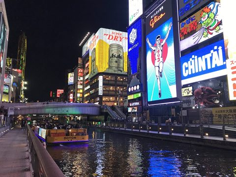

Areas
Choose an area; open a place for hours, prices, access and Maps.



.jpg){kind=link}


.jpg){kind=link}
Notes and sources
Historical source provenance · former interface wording
Map view of all the places ↗ (the Map tab below shows the same map)
157 different places (173 entries) in 6 tabs, from Tabelog and Google Maps ratings.
This private page cannot show the map inside it, so the map opens as its own page (the same one on the family page). Pins show restaurants only.
Every pick is rated Tabelog 3.5 or more and Google Maps 4.0 or more with at least 100 Google reviews. Exceptions are marked on the place: Tabelog 3.3 to 3.49 is a place on the relaxed Tabelog bar (used only in Ise-Shima, around Mt Fuji and for the road stops on the way there); Jazz exception: Tabelog under 3.5 is a jazz venue under 3.5 on Tabelog; expressway rest stops are judged on Google alone. Adult night (children not suited) means the place suits adults, not children; Child policy not stated means Tabelog does not say, so ask when booking. Where a list falls short of the target or a type of place is missing, its tab says so. Closed days are as Tabelog lists them: “no closed day listed” is not a promise the place is open, and year-end holidays are rarely stated, so phone or check the date before you go. Pick by area and by day: each tab shows the days we are there; the Road stops tab follows the driving legs.
This private page also shows each place’s parking, reservation note, Japanese address and phone for taxis. It names the Google Maps list each place is planned for (Foodlist 2026 - Tokyo, Fuji-Gotemba, Nagoya, Ise-Shima, Osaka, Road stops); a place is shown as Saved because it was read back from that list in Google Maps on 13 Nov 2026 (Tokyo 30, Fuji-Gotemba 20, Nagoya 20, Ise-Shima 30, Osaka 20, Road stops 34); on 14 Nov five oyster huts were saved to Ise-Shima and five specialty shops to Nagoya, Osaka and Fuji-Gotemba, each confirmed by Google Maps (lists now Nagoya 23, Osaka 21, Fuji-Gotemba 21, Ise-Shima 35).
Omakase 3
Local specialty 5
Steakhouse 1
Sun 20 Dec: Nagoya to Lake Yamanaka (Tomei) (12)
Cafe and coffee 3
Yakiniku 3
Family Japanese 5
Jazz and live music 1
Bar and cocktails 1
Steakhouse 2
Local specialty 10
Bar and cocktails 3
Bar and cocktails 2
Italian 2
Yakiniku 1
Jazz and live music 2
Where to eat · by area
Omakase 1
PlaceRatingsPriceClosed days and datesWhy
Wed 23 Dec: Lake Yamanaka to Tokyo Station via Otsuki / Chuo (route B) (5)
Oyster huts (Uramura) 5
Other good picks 1
Cafe and coffee 2
Cafe and coffee 4
Local specialty 7
Local specialty 4
Thu 17 Dec: Osaka (Namba) to Hatago VISON (8)
Italian 3
Family Japanese 6
Wed 23 Dec: Lake Yamanaka to Tokyo Station via Gotemba / Tomei (route A) (8)
PlaceRatingsPriceClosed days and datesWhy, and for the car and the phone
Sat 19 Dec: Hatago VISON to Nagoya (10)
Yakiniku 2
Other good picks 2
Family Japanese 4
Local specialty 8
Omakase 2
Selection rules and source context
Ratings read 12-13 Nov 2026; check opening days before you go.